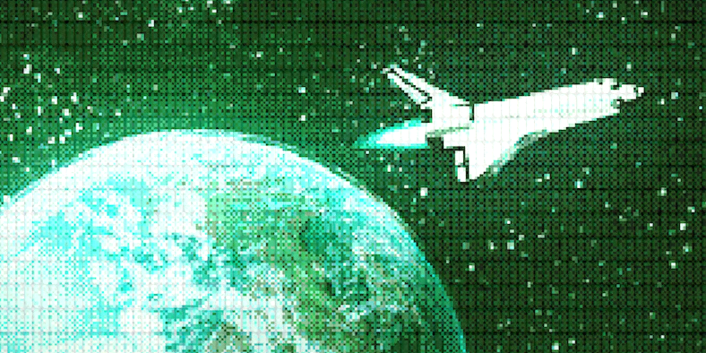
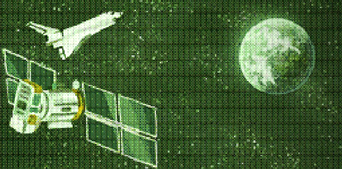
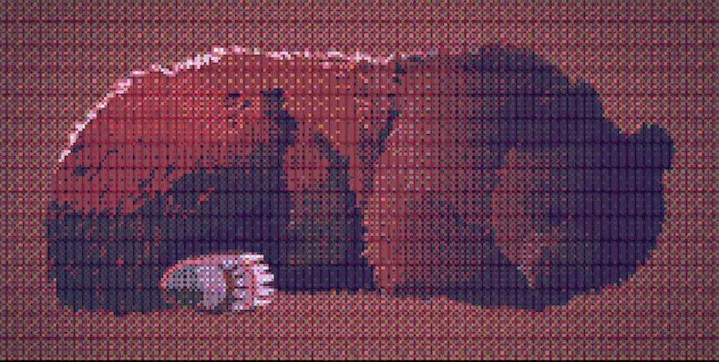
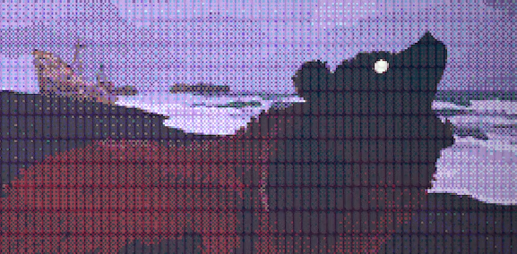
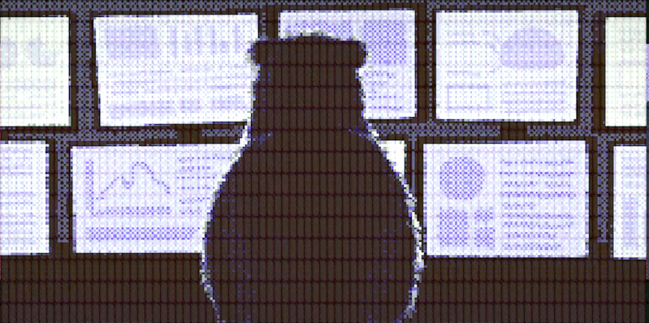
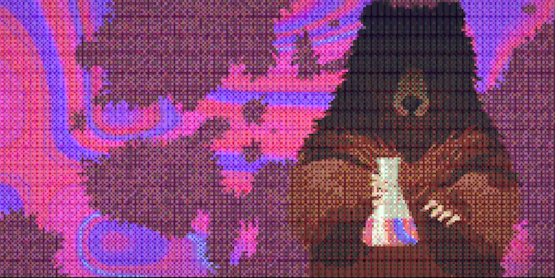
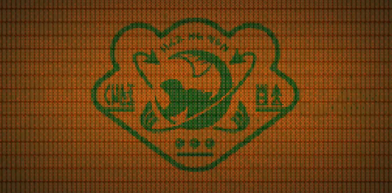
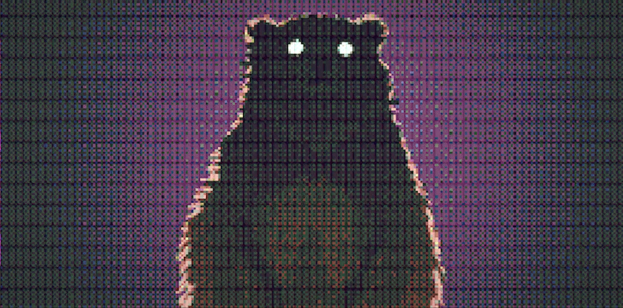

Durante la época del apocalipsis que asoló a la especie humana, aquellos individuos que huyeron a las cavernas de Alterna no fueron los únicos supervivientes. Otros espacaron en la lanzadera Polaris, un arca espacial que transportaba numerosas especies terrestres en letargo criogénico. Su misión era hallar un nuevo planeta donde vivir.
La travesía de la lanzadera Polaris discurrió sin dificultades hasta que, acercándose a los confines del sistema solar, restos de basura espacial impactaron contra la nave y dañaron gravemente su sistema de navegación. Los tripulantes decidieron dar dar la vuelta para intentar volver a la Tierra. Sin embargo, poco antes de lograrlo, el combustible de la lanzadera se agotó por completo, quedando a la deriva durante 10,000 años.
Con el paso de los milenios, la órbita inicialmente estable de la lanzadera Polaris fue cediendo pco a poco a la gravedad terrestre, hasta terminar por caer a su superficie. El impacto fue brutal y todos sus pasajeros perecieron… menos uno: el sujeto experimental «oso n.º 3». Este no solo logró sobrevivir, sino que durante 12,000 años de criogenización había mantenido su consciencia y desarrollando su intelecto con multitud de ideas.
Ya despierto, el oso n.º 3 pudo comprobar una terrible realidad: no estaba en un nuevo planeta, sino de vuelta en la TIerra. ¡Y esta ya no era como él había conocido! Ahora se encontraba totalmente dominada por seres marinos, y no parecía quedar ni el menor rastro de mamíferos en ella.
Empleando artilugios de navegación que pudo rescatar de los restos de la lanzadera Polaris, el oso n.º 3 emprendió la búsqueda de sus congéneres y logró encontrar Alterna. Estaba destruida, evidentemente, pero aún conservaba algunos de los cristales líquidos que habían cubierto sus paredes anteriormente. Con su intelecto mejorado durante miles de años, el oso comenzó a reparar las instalaciones y a estudiar los cristales.
Empleando artilugios de navegación que pudo rescatar de los restos de la lanzadera Polaris, el oso n.º 3 emprendió la búsqueda de sus congéneres y logró encontrar Alterna. Estaba destruida, evidentemente, pero aún conservaba algunos de los cristales líquidos que habían cubierto sus paredes anteriormente. Con su intelecto mejorado durante miles de años, el oso comenzó a reparar las instalaciones y a estudiar los cristales.
Para llevar a cabo el lanzamiento del cohete, necesitaría reunir miles de alevines dorados. La forma en que pretendía usarlos para su objetivo no ha quedado registrada en mis bancos de memoria. Lo que sí sabemos es que el oso n.º 3 cambió su nombre a «Don Oso» y fundó una gran empresa a la que llamó «Don Oso, S. A.». Los habitantes del lugar podçian trabajar en ella buscando alevines dorados a cambio de generosas pagas.
Sin saberlo, los inkling y octarianos ayudaron a Don Oso a llevar a cabo su plan, para el que necesitaba grandes cantidades de alevines. CUando todo estuvo listo, Don Oso se dispuso a llevar a cabo su fase final.
